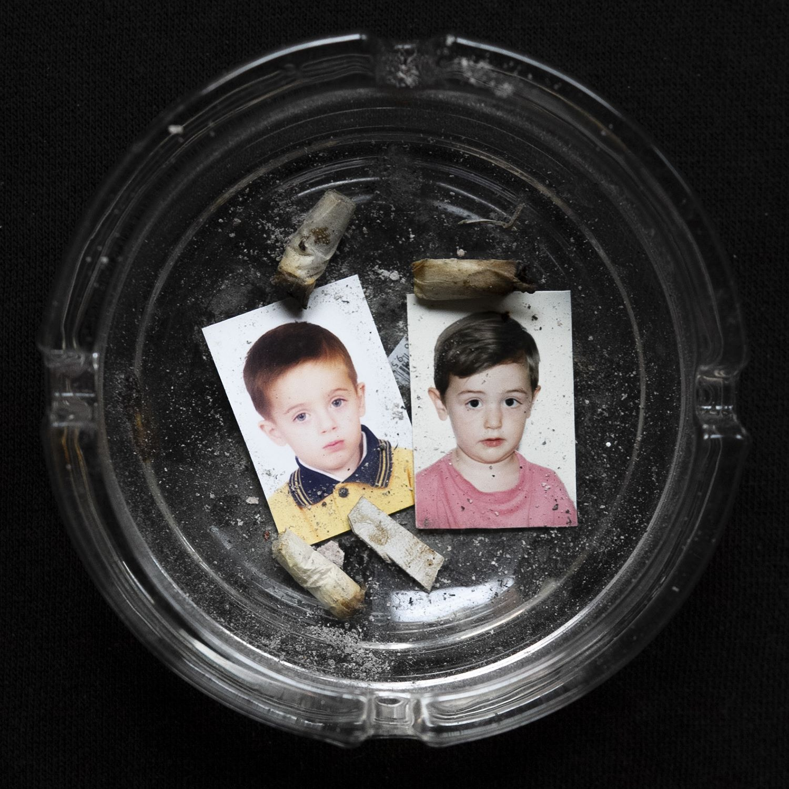

Gerseys y Andreu Slim conforman Duo Biondi,
una dupla de directores con foco en la escena callejera,
y raíces en la fotografía, el graffiti y el lifestyle.
Tratamientos elaborados que logran una potencia
narrativa y visual, primando el valor de las ideas
frente al despliegue.